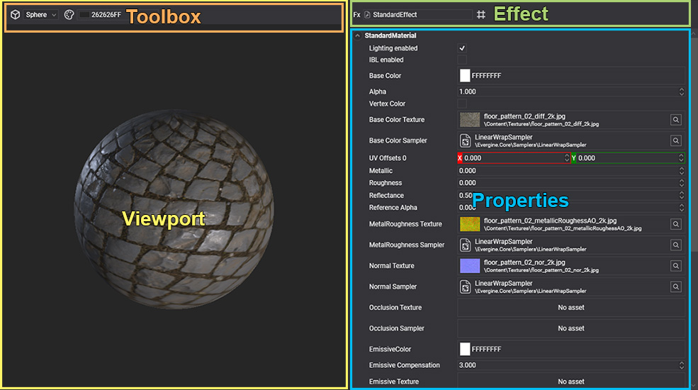

Material Editor

Material Editor allows editing the material assets. Double click over a material asset shown in Assets Details will open this editor. The editor is composed of 3 main parts:
Viewport
Shows the result of the current material configuration. The viewport has a toolbox on the top side that allows change the primitive shown or change the background color. The primitive displays in the viewport are lighting by two lights (front and back) that you can move using the mouse.
| Actions | Description |
|---|---|
| Left mouse button | To rotate the camera around the primitive. |
| Right mouse button | To rotate two lights around the primitive. |
| Mouse wheel | To make zoom in/out camera. |
Effect
The properties of the material will be defined by the effect used. So first to edit or configure your material you need the select the effect that you want to use. The Standard effect is the default effect used when you create a new material.
Properties
The properties panel displays all effect properties or the Material decorator properties associated with the effect. You can configure your materials to change their properties and the result will be shown on the Viewport.